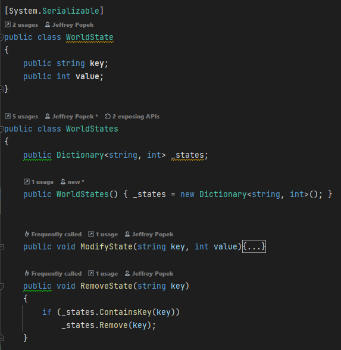
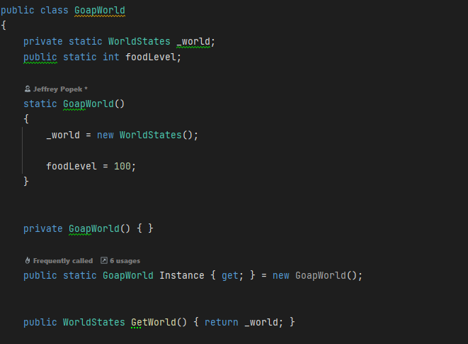
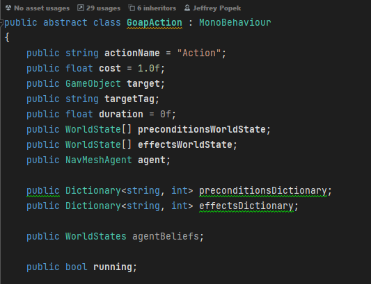
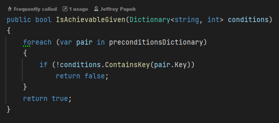
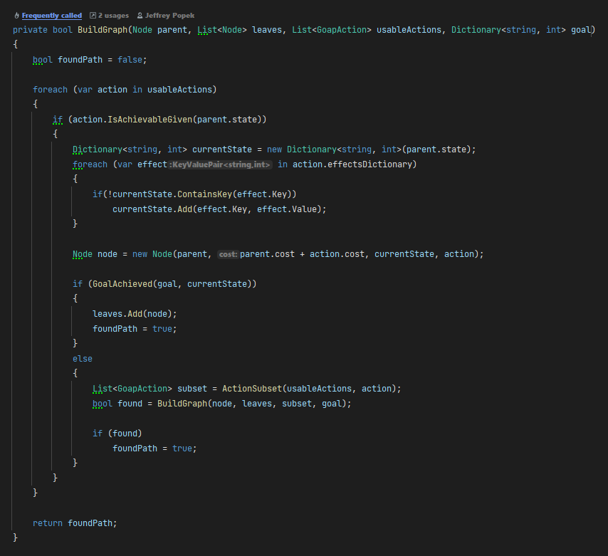
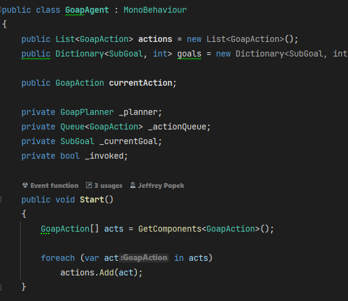

Goal-Oriented Action Planning (GOAP)
Introduction
This project is the implementation of the GOAP (Goal-Oriented Action Planning) algorithm. The goal of this project was to research the technique, breakdown the steps and processes, and create a short demo of basic GOAP working in Unity. I did this project to showcase the applications of the technique in multiple different situations.
Technique Breakdown
Goal-Oriented Action Planning (GOAP) is a way to make AI characters in games behave more intelligently by having them figure out what actions to take based on their goals. Instead of scripting every step an NPC takes, GOAP lets the AI dynamically decide what to do based on the situation. It works by giving the AI a set of possible actions, each with conditions (what needs to be true before the action can happen) and effects (what happens after the action is taken). The AI looks at its current state, figures out what goal it wants to achieve (like eating food if it's hungry), and then plans out a sequence of actions to get there in the most efficient way.

In Unity, GOAP is often combined with NavMesh for movement so that NPCs can not only decide what to do but also navigate the world intelligently. Each action in a GOAP system has a cost, which helps the AI decide between different options—like whether it should grab food that’s closer or one that’s further away but more nutritious. The AI constantly reassesses its plan, so if something changes (like the food disappearing), it can adapt instead of getting stuck. This makes NPCs feel more lifelike because they respond to their environment in a logical way rather than just following a rigid script.
Implementation
The first step to setting up GOAP is creating a world state class. These world states are what our world manager will be holding. A state will have a name, which is the key, and a value. The key will be the name of the state we want our agent to be in or move towards and the value is a corresponding value to link states together in scripts.

The next step is to create the world class. We need a world manager that will store the world information that our agent can read from. To do this we need to create a singleton class that will store our info that the agent can access at any time. For our example we can store how much food our agent has:

Now that we have our world we can start working on the actions that the agent will execute. The actions class will be abstract so other actions can inherit its functions. To start we want to have some basic field that each action can have such as duration, name, cost, etc. Now any new action we make can inherit from “GoapAction” and set their own variables.

With these actions they also need to have functions that can be inherited. One of the most important functions is checking if the goal is achievable. If the goal cannot be reached then we need to tell the planner that we need a new plan. In the code snippet below we check in the preconditions dictionary, which is holding the current world state, if we are able to do this action.

Now that we have our actions we can make our planner. A GOAP planner figures out the best sequence of actions to reach a goal while keeping costs as low as possible. It starts with the current world state and looks at what actions are available based on their requirements. Every time it picks an action, it updates the world state and runs the planner again with the new conditions, keeping track of the total cost. If it reaches a state that satisfies the goal, it stops and backtracks to build the final plan. Out of all the valid options, it picks the one with the lowest cost and throws out anything that wouldn’t work. Below is a bit of the implementation of searching for the best action.

Now that we finished making everything else we can make our GOAP agent. The agent will use the GOAP planner, a list of possible actions, and a goal. With these 3 things it can determine the best path to its goal and execute each action in order. Here is what some of the GOAP agent class looks like. The planner will return a queue of actions to go through until the goal is met or a new plan is created.

Finally I can show how GOAP can be applied to an agent to find the best path to its goal. In this example the agent’s goal is to not be hungry and its actions include: find food, eat food, and rest. When the agent spawns in it immediately starts to execute its plan. The first action would be to find food, then after that it needs to wait until it gets below 80 hunger then it will go rest at the checkpoint. After resting more food will spawn and the agent will continue to execute its plan.
What I Learned
During this project I learned a lot during the research phase. GOAP was first created for F.E.A.R. released in 2005. Since then it has been used countless times by many different games in varying contexts. Although GOAP is not used as often as it used to be, it is still a powerful AI behavior technique. While researching this project I got to learn about the thought process of the great minds behind F.E.A.R., especially Jeff Orkin the creator of GOAP. I also got to learn more about implementing a more advanced AI technique into Unity which will help me in AI and Gameplay programming in the future.